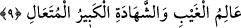

dördüncüsü olarak dünyaya gelmiştir.
İmam Şafiî şöyle der: “Yemenli bir ihtiyar bana hanımının her batında beş çocuk
olmak üzere birkaç doğum yaptığını haber verdi.”
Artıp azalan şeyin hayız kanı olduğu da söylenmiştir. Çünkü hayız kanı bazen az,
bazen çok gelir.
Rahmin azaltmasından maksadın, hâmilelik devresinde hayız hâli olduğu da
söylenmiştir. Hâmile bir kadın hayız görmesi durumunda çocukta eksiklik olur. Çünkü
hayız kanı rahimdeki çocuğun gıdasıdır. Bu kan aktığı zaman, gıdası eksilmiş,
dolayısıyla çocuk da eksik olmuş olur. Hâmile kadının hayız görmemesi durumunda ise
çocuk artıp tamamlanır. Bu mânâya göre âyetteki “azaltma” hayız kanının akması
sebebiyle çocuğun yaratılışında meydana gelen eksiklik, “artırma” ise kanın tutulması
sâyesinde çocuğun tam bir yaratılışa sahip olması mânâsına gelmiş olur.
“Onun katında her şey bir ölçü iledir.” O ölçüden fazla ve eksik olmaz.
Bahru’l-ulûm da şöyle denilir: “Her şey, takdîr edilmiş, levh-i mahfûzda yazılmış ve
varlık sahnesine çıkmadan önce mâlûmdur. Hâli, zamanı ve ilgili olacağı şeyler
bilinmiştir.”
et-Tibyân’da ise şöyle denilir: “O’nun katında her şey, rızk ve ecel konusunda
aşamayacağı bir sınır iledir.”
9. O, görülmeyeni de görüleni de bilir; büyüktür, yücedir.
“O, görülmeyeni de” yâni Allah Teâlâ gayb adı verilebilecek her şeyi “görüleni de”
yani şehâdet adı verilebilecek her şeyi “bilir.”
Gayb, duyu organlarından gizli olan şeydir. Gizli sırlar ve bilgiler ile âhiret bu
kabildendir. Şehâdet ise duyu organlarından gizli olmayan şeydir. İdrâk edilebilen ve
âşikâr olan varlıklar ile dünya bu kabildendir.
Bazısı der ki: “Kur’ân’da gaybı bilmenin Allah Teâlâ’ya isnâd eden bütün ifadelerde
gayb, bize göredir. Çünkü Allah Teâlâ’ya göre gayb yoktur.”
İleri gelen sûfîlerden birisi şöyle der: “Zât-ı baht ve hüviyyet-i sırfe mertebesinde
bütün nisbet ve izâfetler ortadan kalktığı zaman, ilmî nisbet de yok olur. Böylece bu
mertebe îtibarıyla gayb ilmi de ortadan kalkar. Ancak sıfatlar, yâni zât-ı vâhidiyyet
mertebesinde taayyünât ve mevcûdâtın varlıklarını isbât îtibâriyle ilim olduğu hâl
üzeredir, anla!”
O’na bir zerrenin ilmi örtülü değildir
Ki açık da gizli de O’nun yanında birdir
O, “büyüktür,” hiçbir şey ilminin dışında olmayan şanı yüce bir varlıktır, “yücedir,”